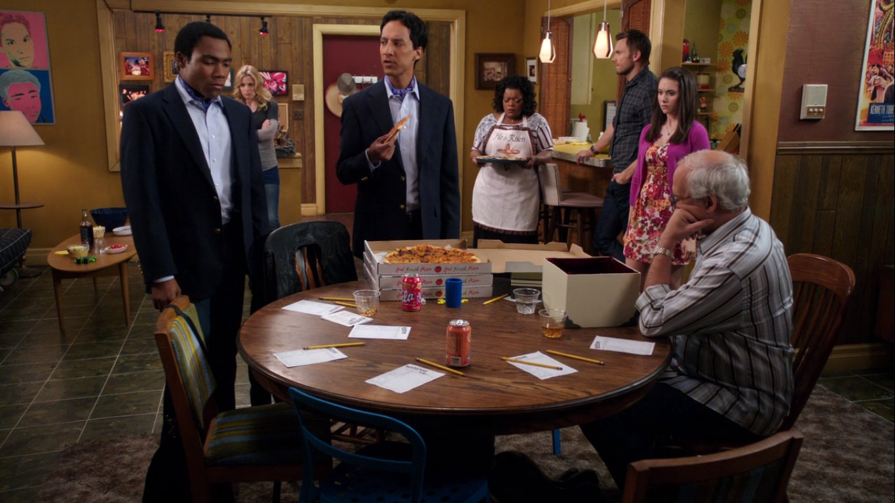
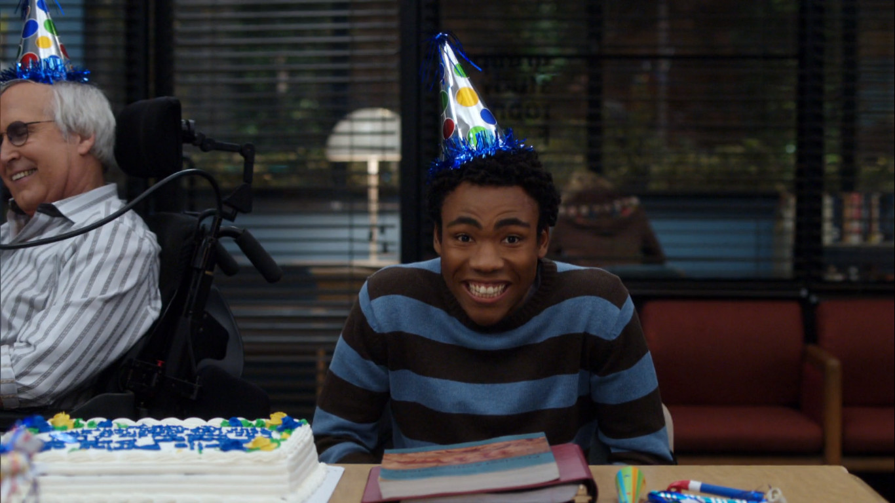
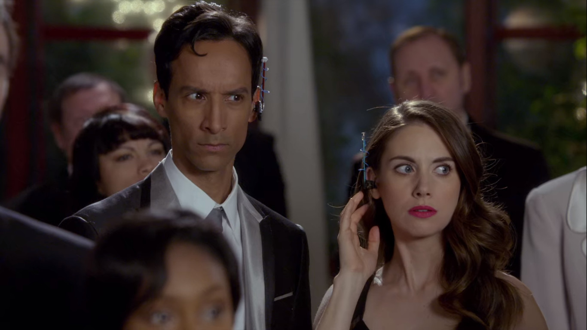
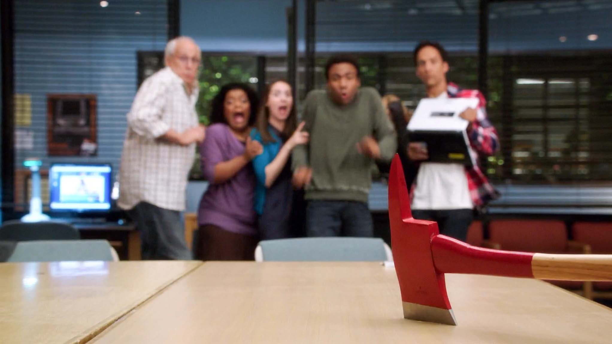
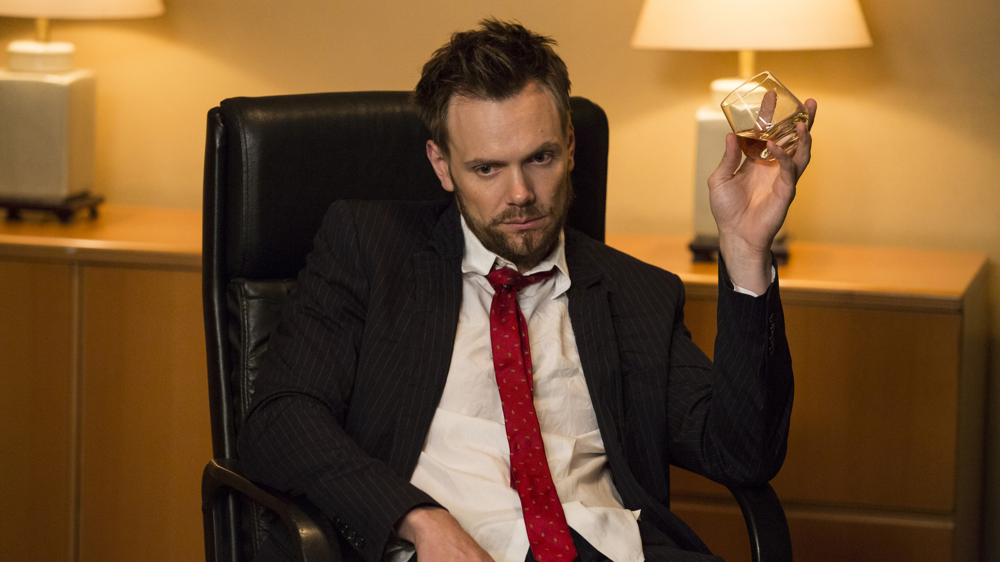
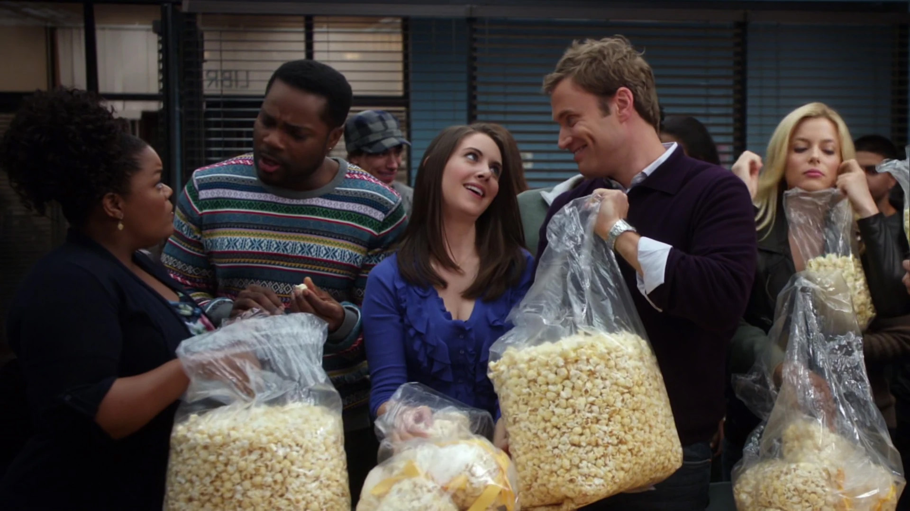
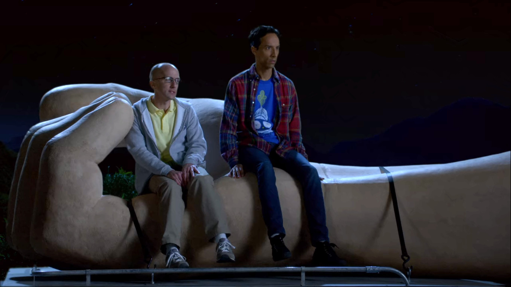
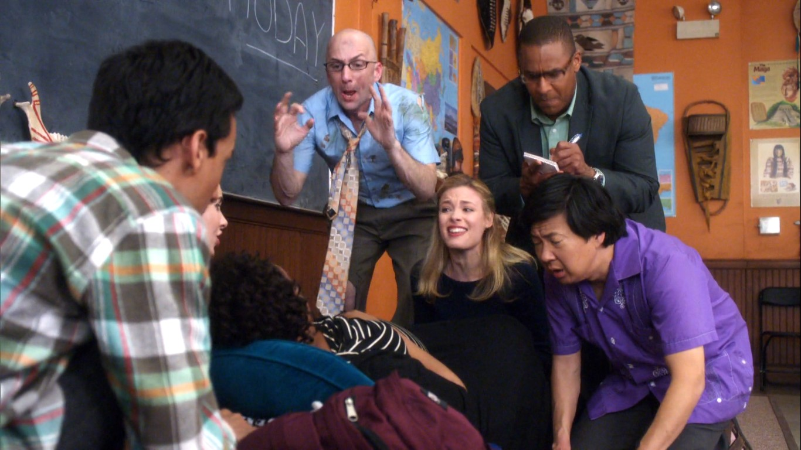
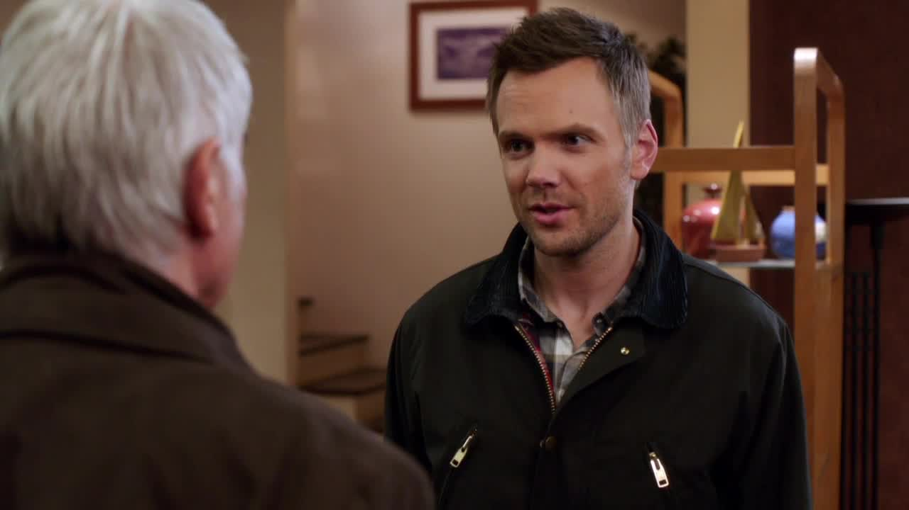

"Six Seasons and a Movie"
"Jeff Winger is disbarred and suspended from his law firm when it is discovered that he lied about having a bachelor's degree from Columbia University. To earn a legitimate degree, he enrolls at Greendale Community College in Colorado. He quickly becomes attracted to his classmate, social activist Britta Perry, and pretends to run a study group in order to spend time with her. Britta invites classmate Abed Nadir, a socially awkward and pop culture obsessed student, who in turn brings other classmates along: religious single mother Shirley Bennett; naïve over-achiever Annie Edison; former high school football star Troy Barnes; and bigoted, elderly millionaire Pierce Hawthorne. Despite their differences, the group's members soon become close friends. "
In 2009, NBC was looking for a fourth sitcom to join The Office, 30 Rock, and Parks & Recreation on Thursday nights, hoping to recapture the formula of four half-hour comedies followed by a drama that had carried them for decades. This is where Dan Harmon’s Community came into play: a sitcom inspired by Harmon’s time at Glendale Community College and his relationship with a Spanish study group. The show started off as a more traditional sitcom, but increasing meta influences and homages/parodies led Community to develop a new style that was completely different from anything else on air. Though Community consistently struggled with viewers, it was acclaimed by critics and gained a large cult following. Due to the unique and ambitious nature of the show (and its refusal to appeal to wider audiences by going mainstream), Community constantly struggled. More than once, the show was delayed or cancelled, and more than once, fans came together to keep it alive. “Six seasons and a movie” (a running gag) soon became Community’s rallying cry.
Seasons 2 and 3 are widely considered to be the best of Community. Firing on all cylinders, these seasons are clever, heartfelt, and full of the magic that makes Community shine. Though Seasons 1, 5, and 6 are incredible, they each seem to be missing something. Season 1 can feel mainstream, and certain members of the study group seem out of character at times. Seasons 5 and 6 have their highs, but they suffer from the absence of Chevy Chase and Donald Glover, and have a different tone. Behind-the-scenes conflicts cut Dan Harmon from Season 4, before his eventual return for the final two seasons. Full of great ideas but executed poorly, Season 4 can feel hollow and is seen as the show’s low point.
Creating a definitive ranking for Community's 110 episodes would be impossible, as their appeal depends largely on the audience. However, the following list sorts out a general trend, with the best of Community at the top, and some of the show's low points at the bottom. The S-tier is made up of three near-perfect episodes. These episodes have incredible attention to detail, packed dialogue, and don't waste a second of the 22 minutes that they work with. They can (and should be) be watched with anyone, as they don't require too much context or parody a particular genre. The A-tier showcases Community's magic. These 11 episodes see the show at its best with great homages, heartfelt messages, and hysterical moments that defined Community. The B-tier has 21 solid episodes. These are good episodes that are held back in small ways (lackluster B-plots, uncomfortable moments, etc.). The C-tier is special. While it has many of Community's best episodes, it isn't for every audience. These 16 episodes are extra meta, take a particular concept to an extreme, require context that not all viewers have, or are just weird. The D-tier has 59 episodes that are missing something, ranging from good to embarrassing. Lumping the Pilot together with Intro to Felt Surrogacy feels wrong, but there's no clear spot to draw a line.

Cooperative Polygraphy
Cooperative Calligraphy
Advanced Dungeons & Dragons
A Fistful of Paintballs
Pillows and Blankets
Conspiracy Theories and Interior Design
Basic Intergluteal Numismatics
Paradigms of Human Memory
Basic Lupine Urology
Intermediate Documentary Filmmaking
Modern Warfare

Mixology Certification
Contemporary American Poultry
Documentary Filmmaking: Redux
Wedding Videography
Physical Education
Herstory of Dance
Beginner Pottery
Studies in Modern Movement
Basic Rocket Science
Debate 109
For a Few Paintballs More
Intro to Political Science
Geography of Global Conflict
Curriculum Unavailable

Modern Espionage
Introduction to Film

Introduction to Statistics
Aerodynamics of Gender

Introduction to Teaching
Analysis of Cork-Based Networking
Anthropology 101
Foosball and Nocturnal Vigilantism
Accounting for Lawyers
Regional Holiday Music
Emotional Consequences of Broadcast Television
Horror Fiction in Seven Spooky Steps
Epidemiology
Digital Estate Planning
Geothermal Escapism
App Development and Condiments
Abed's Uncontrollable Christmas
Critical Film Studies

Biology 101
The First Chang Dynasty
Basic Human Anatomy
Virtual Systems Analysis
Advanced Advanced Dungeons & Dragons
Messianic Myths and Ancient Peoples
Advanced Safety Features
Environmental Science
Ladders
Spanish 101

Competitive Ecology
Queer Studies & Advanced Waxing
Investigative Journalism
Urban Matrimony and the Sandwich Arts
Early 21st Century Romanticism
Home Economics
Pilot

Repilot
Digital Exploration of Interior Design

Course Listing Unavailable
Pascal's Triangle Revisited
Lawnmower Maintenance & Postnatal Care
Basic Crisis Room Decorum
English as a Second Language
Comparative Religion
Introduction to Finality

Asian Population Studies
Origins of Vampire Mythology
Romantic Expressionism
The Science of Illusion
Communication Studies

Basic RV Repair and Palmistry
Social Psychology
Politics of Human Sexuality
Basic Sandwich
Basic Story
Basic Email Security
VCR Maintenance and Educational Publishing
The Psychology of Letting Go
Celebrity Pharmacology 212
Basic Genealogy
Football, Feminism and You
Advanced Criminal Law
Interpretive Dance
Bondage and Beta Male Sexuality
Intro to Recycled Cinema
Advanced Gay

Applied Anthropology and Culinary Arts
Paranormal Parentage

Cooperative Escapism in Familial Relations
Contemporary Impressionists
Competitive Wine Tasting
Custody Law and Eastern European Diplomacy
Heroic Origins
Intro to Knots
Conventions of Space and Time
Laws of Robotics & Party Rights
Grifting 101
G.I. Jeff
Intro to Felt Surrogacy
Alternative History of the German Invasion
History 101
Advanced Documentary Filmmaking
Advanced Introduction to Finality
Economics of Marine Biology
The Art of Discourse
Season 3 - Episode 14

The students of Greendale are drawn into an epic pillow fight as Troy and Abed start a war that threatens to destroy their unique friendship.
A spoof on Ken Burns documentaries, Pillows and Blankets is narrated by Keith David (who has done narration for past Ken Burns documentaries and later stars as Elroy Patashnik in S6). The episode is equal parts ridiculous and wholesome, touching on Troy and Abed’s relationship, and Jeff’s growth as a character.
Season 2 - Episode 16

Pierce pretends to be dying so that he can bequeath a series of cryptic and sometimes mean-spirited gifts to his study partners, and Abed decides to shoot a documentary film of the situation.
The first of Community’s documentary episodes, Intermediate Documentary Filmmaking takes full advantage of the medium (referencing classic “mockumentary” shows such as The Office and Parks and Recreation). Pierce’s “gifts” to the study group are each very different, leading to hilarious moments (Troy and LeVar Burton), and deeper themes (Jeff’s relationship with his father).
Season 6 - Episode 13

As their sixth year at Greendale draws to a close, Abed asks everyone to imagine pitching a TV show about what they would do in season seven.
Emotional Consequences of Broadcast Television was the perfect finale to Community (at least until the movie). However, both its humor and heart depend on the connection that the audience has with the show, meaning some viewers may not enjoy the episode (flag for language). Its meta writing builds to the point of addressing the audience directly in what may be the best end tag of the series.
Season 3 - Episode 3

Chaos ensues when the Study Group tries to divide itself up into biology lab partners, and Chang appoints himself security "detective," trying to solve a mystery that is only in his head.
From Profesor Kane’s Lego speech to the group’s treatment of Todd, Competitive Ecology has its moments. It puts the characters’ negative traits on full display (which some love and others don’t). The image above is a chart showing what the anonymous ballot results from the episode could have been. “No offense, Todd.”
Season 6 - Episode 4

Dean Pelton is asked to lie; Chang auditions for a stage adaptation of "The Karate Kid."
Queer Studies & Advanced Waxing is one of the few times that we get to see Chang succeed, and this leads Annie to grow as well. Jason Mantzoukas’ cameo as a Whiplash-esque director is hilarious, and Frankie’s comment on the missing IT lady becomes even funnier when you realize that Paget Brewster played the IT lady back in S5.E6.
Season 1 - Episode 12

Shirley throws a Christmas party for the gang and much to her surprise learns her classmates come from various religious backgrounds. Meanwhile, Jeff is challenged by the school bully and faces the reality that he may fail Spanish 101.
Comparative Religion did a solid job of introducing us to each of the characters’ religious backgrounds. The episode’s bully is played by Anthony Michael Hall, who played Brian Johnson in The Breakfast Club (referenced heavily in S1.E1) and Chevy Chase's son Rusty Griswold in National Lampoon's Vacation.
Season 2 - Episode 22

As the semester draws to a close, the anthropology class final is disrupted when Shirley goes into labor one month ahead of schedule.
Applied Anthropology and Culinary Arts is a bottle episode (though Pierce buying Troy and Abed’s handshake is great). Note that when Professor Duncan messes around behind the school flag, he is actually pulling the fire alarm (which doesn’t work).
Season 2 - Episode 20

Jeff suspects something isn't quite right when an attractive classmate gets engaged to marry Pierce.
Competitive Wine Tasting gives Pierce the spotlight and lets us see Professor Garrity again, but doesn’t deliver much else.
Season 4 - Episode 7

Dean Pelton and Annie try to land a "whale" student while Jeff is assigned to keep Pierce occupied. Meanwhile, Troy and Shirley take a physical education education course, and Abed creates a fraternity to annoy the dean.
There just isn’t much to say about Economics of Marine Biology. This episode may be Community’s most forgettable.